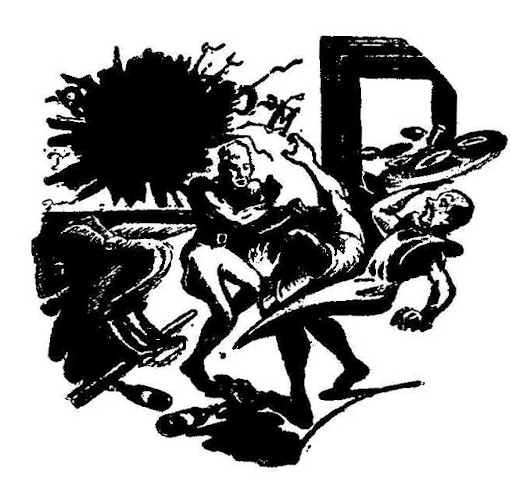
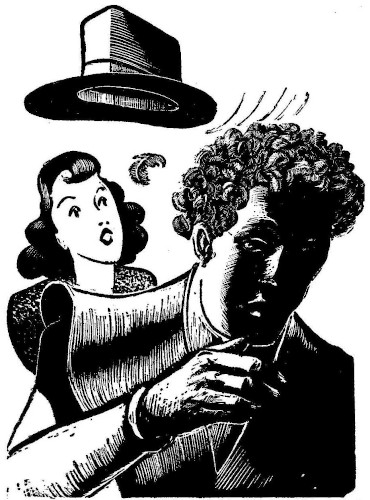

[Transcriber's Note: This etext was produced from
Astounding Science-Fiction, October 1946.
Extensive research did not uncover any evidence that
the U.S. copyright on this publication was renewed.]
The telephone rang and the lieutenant of police Timothy McDowell grunted. He put down his magazine, and hastily covered the partially-clad damsel on the front cover before he answered the ringing phone.
"McDowell," he grunted.
"McDowell," came the voice in his ear. "I think ye'd better come overe here."
"What's up?"
"Been a riot at McCarthy's on Boylston Street."
"That's nothing new," growled McDowell, "excepting sometimes it's Hennesey's on Dartmouth or Kelley's on Massachusetts."
"Yeah, but this is different."
"Whut's so different about a riot in a jernt like McCarthy's on a street like Boylston?"
"Well, the witnesses say it wuz started by a guy wearin' feathers instead uv hair."
"A bird, you mean."
"Naw. 'Twas a big fella, according to tales. A huge guy that refused to take off his hat and they made a fuss. They offered to toss him out until he uncovered, and when he did, here was this full head of feathers. There was a general titter that roared up into a full laugh. The guy got mad."
"Yeah?"
"Yeah. He got mad and made a few swings. 'Twas quite a riot."
"What did McCarthy expect—a dance? When a guy gets laughed at for having feathers instead of hair.... Holy St. Patrick! Feathers, did ye say?"
"Yup."
"Look, O'Leary," growled McDowell angrily, "you've not been drinkin' yourself, have ye?"
"Nary a drop, lieutenant."
"So this bird takes off his hat and shows feathers. The crowd laughs and he gets mad. Then what?"
"Well, he tossed the bartender through the plate glass window, clipped McCarthy on the button and tossed him across the bar and wrecked about fifteen hundred dollars worth of fine Irish whiskey. Then he sort of picked up Eddy, the bouncer, and hit Pete, the waiter, with him. Then, having started and finished his own riot, the guy takes his drink, downs it, and stamps out, slamming the door hard enough to break the glass."

"Some character," glowed McDowell, admiringly. "But what am I supposed to do?"
"McCarthy wants to swear out a warrant for the guy. But before we do, I want to know more about this whole thing. First off, what's a man doing wearing feathers instead of honest hair?"
"Ask him," grunted McDowell.
"Shall I issue the warrant?"
"Yeah—disturbing the peace. He did that, anyway. And if it's some advertising stunt—this feathers business—I'll have some wiseacre in jail in the morning. Look, O'Leary, I'll meet you at McCarthy's in ten minutes." He hung up the phone and snapped the button on his communicator.
"Doc?" he barked. "Come along if you want to. We've got us a guy wearing feathers instead of hair!"
"Trick," growled the doctor. "Go away. No one can grow feathers instead of hair."
"That's why I want you along. Come on, Doc. This is an order!"
"Confound you and your orders." He hung up angrily, and the lieutenant heard him breaking up the poker game as he snapped his own switch closed.
It was ten minutes to the second when the car pulled up before McCarthy's. O'Leary was already inside, talking to a man holding a chunk of raw beef to his eye.
"Now," said McDowell, entering with the doctor on his heels, "what's this about feathers?"
"Swear it, lieutenant. An' I want the devil clapped in jail where he belongs."
"Sure now," said McDowell in a mollifying tone, "and you can prove them feathers were really growin'?"
"Sure," snapped McCarthy. "Here!" and he handed Lieutenant McDowell something slightly bloody. It was a bit of skin, to which was attached three tiny feathers. "Just before he bopped me I got me hands in his scalp to see if they wuz real. They wuz, because they came hard and he howled and went madman."
McDowell handed the specimen to Doc. "Examine it, Doc. One, are they real feathers? Two, is that real human skin, and three, is that human blood?"
"That'll take time," said the doctor looking at the bloody bit. "Bet that hurts, though."
"Hurts?" grunted McDowell. "So what?"
"By which I mean that he'll be visiting a doctor or a hospital for treatment. That's no home-remedy job!"
"O.K.," smiled McDowell cheerfully. "Now look, McCarthy. We'll get right on it. You've got your warrant and can prefer charges. Meanwhile there's nothing I can do here. We'll go back to the station and go to work."
"How about the damages?" growled the owner.
"I'm a policeman, not a civil lawyer," returned McDowell. "Take it to court when we catch our—bird."
"A fine force we got," grumbled McCarthy belligerently.
McDowell grunted angrily and turned to O'Leary. "He don't like us," he said.
"McCarthy, have you been closing promptly at midnight on Saturday night?" demanded O'Leary. "That's a bad law to break, you know."
"I've been lawful," returned the barkeep. "And I'll watch me step in the future."
McDowell laughed and he and the Doc left the place.
Back at the station, reporters met them with questions. McDowell held up a hand. "Look, boys," he said with a grin, "this may be something you can print. It may also be an attempt to ridicule the force. I'll tell you this much: There was a guy apparently wearing feathers instead of hair that started a riot in McCarthy's on Boylston a little while ago. Now if you'll hold off phoning that in until we check, we'll tell you whether the guy was wearing feathers—or growing them! Also—whether he was human. Mind waiting?"
"We'll wait," came the chorused reply.
"Whatcha going to use for lead?" asked one reporter of another.
"I don't know yet. It depends whether he was having a frat initiation or was really one of our fine feathered friends."
McDowell followed the doctor in—and the reporters followed the lieutenant in. Gag or not, thought McDowell, these guys will be as good to me as I am to them. And if it is a gag, we'll show 'em that we know how to find out about such, anyway.
Doc ignored the room teeming with people, and went to work. He made test after test, and then pored through a couple of volumes from his bookcase. Finally he gave that up and faced the group, casting a glance at McDowell.
McDowell said: "This is off the record until I find out what he's got to say. If it's O.K., you get it first hand, O.K.?"
The reporters nodded.
Doc cleared his throat. "The skin is human—so is the blood. Indications are the feathers were growing out of the skin, not merely inserted."
"You're certain?" gasped one reporter.
"I'm reasonably sure," qualified the doctor. "Skin ... well, skin has certain tests to prove it. This stuff is human skin, I'm certain. It couldn't be anything else. The feathers—I tried to classify them, but it will take a professional ornithologist to do that."
"But Doc," queried the reporter, "if that's human skin, how can feathers be growing out of it?"
"Ask me another," said the doctor, puzzled.
"Huh," grunted the reporter. "Man from—?" He shut his trap but quick, but the words carried enough connotation.
"Look," said McDowell, "you can use that Man from Mars gag if you want to, but don't say we said so. It's your own idea, see?"
"Right, lieutenant," they said, happy to get this much. It would make a bit of reading, this item.
"Now," said McDowell. "Doc and I are going over to Professor Meredith's place and ask him if he knows what kind of feathers these are."
One reporter spoke up quickly. "I'm holding mine until we get Meredith's report," he said. "And I've got a station wagon outside. Come on, lieutenant and Doc—and any of you mugs that want to ride along."
There was a grand rush for the door.
Professor Meredith looked the feather over carefully, classifying it as best he could. He sorted through several books, consulted many notes of his own, and made careful counts of the spines-per-inch along the shaft of the feather. He noted its coloring carefully and called for a general statement as to the color, size, and general shape of the feather.
"This is done somewhat like you file fingerprints," he told the lieutenant. "But here at home I'm stumped. I've never seen that kind before. However, over at the university we have a punched-card sorter. We can run through all known birds and see if any of the feathers agree with this specimen."
This time they took Professor Meredith along with them. Using official sanction, the professor opened the laboratory and entered the building. It was three hours later that the professor made his official statement to the police and to the press.
"This feather is not known to the scientific world," he said. "However, it does exist, and that proves that the scientific world does not know everything there is. I would say, however, that the animal from which this came is not known in any regular part of the civilized world."
"Explain that, Professor Meredith," requested McDowell.
"It is a small feather—fully grown. It is in an advanced stage of evolution. Feathers, you know, evolved from scales and we can tell how far they have come. It must come from a small bird, which is also evidenced by the fact that it is not known to man. There are places in the backwaters of the Amazon where man has not been, and certain spots in Africa and the part of the world near Malaya. Oceania, and others."
"May we quote you on this, professor?" asked the Press.
"Why—yes. But tell me now, where did you get that feather?"
McDowell explained. And Professor Meredith gasped. "I'll revise my statements," he said with a smile. "This feather is not known to exist in the scientific world. If the story is true, that this feather emerged from the scalp of a man, it is a scientific curiosity that would startle the world—and make a mint for the owner in any freak show."
The reporter from the Press said: "Professor, you state that this feather is not known to the scientific world. Is there any chance that this—creature—is utterly alien?"
"Since the disclosure of the affair at Hiroshima and Nagasaki," smiled the professor, "a lot of people have been thinking in terms of attaining the stars—interplanetary travel. As a member of a certain society known as the Forteans, one of our big questions has been this: If interplanetary travel is possible, why hasn't someone visited us? Gentlemen, I'd not like to hear myself quoted as giving the idea too much credulence, but it is something to ponder."
That did it. There was another general rush for the car. There was a wild ride following, in which the man from the Press displayed that he had two things—a careful disregard for traffic laws, plus illegal ownership of a siren. But they delivered Professor Meredith to his home, the policemen to their station, and then the party broke up heading for their respective telephones.
Three hours later Lieutenant McDowell was reading a headline stating: "Hub of world to be Hub of Universe?"
McDowell groaned. "Everything happens to Boston, and everything in Boston happens on Boylston Street. And everything that happens on Boylston Street happens to me."
Doc smiled sourly. "Now what?"
"We've canvassed the medical profession from Brookline to Everett, including the boys on Scollay Square and a bouquet of fellows who aren't too squeamish about their income. Not a sign. Furthermore, that feather specimen was telephotoed to the more-complete libraries at New York, Chicago, Washington, and Berkeley. The Audubon Society has been consulted, as well as have most of the big ornithologists in the world. The sum total is this:
"That feather is strictly unlike anything known. The skin is human—or as one dermatologist put it, is as human as possible considering that it is growing feathers instead of hair. The blood is the same story."
Doc nodded. "Now what?" he repeated, though the sense of his words was different.
"We wait. Boy, there's a big scareline in all the papers. The Press is hinting that the guy is from outer space, having been told that there were intelligent humans here by that series of atom bomb explosions."
"If we were really intelligent, we could get along with one another without atom bombs," grunted the Doc.
"Well, the Sphere claims that the character is a mutant resulting from atom bomb radiation by-products, or something. He quotes the trouble that the photographic manufacturers are having with radioactive specks in their plants. The Tribune goes even further. He thinks the guy is an advance spy for an invasion from outer space, because his gang of feather-bearing humans are afraid to leave any world run loose with atom bombs.
"The ultraconservative Events even goes so far as to question the possibility of a feather-bearing man growing to full manhood without having some record of it. Based on that premise, they build an outer space yarn about it, too."
Doc grunted. "Used to be invasions from Mars," he said.
"They're smarter now," explained McDowell. "Seems as how the bright boys claim that life of humanoid varieties couldn't evolve on any planet of this system but the Earth. Therefore if it is alien, it must come from one of the stars. If it came from Mars it would be green worms, or seven-legged octopuses. Venus, they claim, would probably sprout dinosaurs or a gang of talking walleyed pike. Spinach, I calls it."
Doc smiled. "Notice that none of 'em is claiming that they have the truth? It's all conjecture so far."
"Trouble is that I'm the fall guy," complained McDowell. "It landed in my lap and now I'm it—expected to unravel it myself or be the laughingstock of the country, Canada, and the affiliations of the Associated Press."
The phone rang, and McDowell groaned. "Some other guy wanting to climb on the wagon with us. Been ringing all morning, from one screwbell or another with theories, ideas, un-helpful suggestions as to how to trap the alien, and so forth. My own opinion is to treat him nice, apologize for our rather fool behavior, and see that he don't take a bad statement home with him. If he tells 'em about us from what he's seen—Hello," he bawled into the phone.
"I am Mrs. Donovan, on Tremont Street. I wanted to report that the fellow with the feathers on his head used to pass my window every morning on his way to work."
"Fine," said McDowell, unconvinced. "Will you answer me three questions?"
"Certainly."
"First, how do you know—seems he never took his hat off?"
"Well, he was large and he acted suspicious—"
"Sure," growled McDowell, hanging up the phone.
He turned again to Doc. "It's been like this. People who think they've seen him; people who are sure they've had him in for lunch, almost. Yet they missed calling about a character growing feathers instead of hair until there's a big fuss—just as though a guy with a head covered with feathers was quite the ordinary thing until he takes a swing at a guy in a saloon."
Doc said: "You've canvassed all the medics in Boston and environs?"
"In another hour we'll have all the medics in Massachusetts. Give us six hours and we'll have 'em all over New England and part of Canada, New York, and the fish along the Atlantic Ocean."
"Have you tried the non-medics?"
"Meaning?"
"Chiropodists, and the like. They aren't listed in the Medical Register, but they will often take care of a cut or scrape."
McDowell laughed. "Just like a stranger to go to a foot specialist to get a ripped scalp taken care of."
"Well, it is farfetched, but might be."
"I'm going to have the boys chalk all sorts, and we'll follow up with the pharmacists. Does that feather-headed bird know how much money he's costing the city, I wonder?" McDowell gritted his teeth a bit as the phone rang again. "I wonder what this one has to say," he snarled, and then barked: "McDowell," into the instrument.
"I have just seen the feather-headed man on Huntington Avenue," replied a gruff voice. "This is Dr. Muldoon, and I'm in a drugstore on the corner of Huntington and Massachusetts."
"You've seen him? How did you know?"
"His hat blew off as he came out of the subway entrance here."

"Subway—?"
The doctor chuckled. "The Boston Elevated, they call it. He headed toward Symphony Hall just a moment ago—after collecting his hat."
"How many people were there?"
"Maybe a dozen. They all faded out of sight because they're a bit scared of that alien-star rumor. He grabbed his hat rather quickly, though, and hurried out of the way as I came here to telephone."
"Stay there," snapped McDowell, "and I'll be right over."
McDowell and Doc jumped into the car and went off with the siren screaming. McDowell cursed a traffic jam at Copley Square and took the corner on one and one-half wheels into Huntington. They ignored the red light halfway up Huntington, and they skidded to a stop at Massachusetts Avenue to see a portly gentleman standing on the corner. He wasted no time, but jumped in the car and introduced himself as Dr. Muldoon.
"He went this way," pointed the doctor. The car turned roughly and started down the street. They combed the rabbit-warren of streets there with no sign of the feather-headed man at all.
McDowell finally gave up. "There are a million rooming houses in this neighborhood," he said sorrowfully. "He could lose himself in any one of them."
"I'm sorry," said the doctor. "It's funny that this cut scalp hasn't caused him to turn up somewhere."
"That's what we'd hoped for," said McDowell. "But either the guy is treating himself or he's got an illegal medic to do the job."
"From what you say—a piece of scalp ripped loose—it is nothing to fool around with. How big was the piece?"
"About as big as a fingernail," grinned McDowell.
"Most dangerous. He might die of infection."
"I wonder if he knows that?"
"I wouldn't know," said Dr. Muldoon.
"Well, I've combed the doctors. Now I'm going after the dermatologists, chiropodists, osteopaths, and pharmacists. I might as well take a swing at the chiropractors, too, and maybe hit that institution down on Huntington near Massachusetts. They might know about him."
McDowell looked up at the second-story offices that bordered Massachusetts Avenue between Huntington and Boylston and shook his head. "A million doctors, dentists, and what-nots. And what is a follicologist?"
"A hair specialist."
"A what?" exploded McDowell. He jammed on the brakes with a hundred and seventy pounds of man aided with some muscle-effort against the back of the seat. The police car put its nose down and stopped. But quick. Traffic piled up and horns blasted notice of impatience until McDowell jumped out, signaled to a traffic cop to unsnarl the mess. Then McDowell raced into the office.
He paused at the door marked: Clarence O'Toole, Follicologist. McDowell paused, listening, for two voices were coming through the door. One was rumbling, low. The other was in a familiar brogue.
"But this hurts," complained the rumble.
"Naturally. Any scalping hurts. But money will ease any hurt."
"But where's this money?"
"You are to get ten percent of my profit for a year. That plus a good head of hair. Isn't that enough?"
"Ordinarily, yes. But I'm in a jam, now. The police are looking for me with blood in their eyes."
"Now, surrender yourself," said the brogue. "Go to this Lieutenant McDowell. Explain the error. Tell them that you were afraid, that you'd been hiding because of the ridicule attendant to the feathers on your scalp. Then go to the press and demand satisfaction for their ridicule, libel; throw the book at them. That will get us the publicity we want, and as soon as the thing is explained, people will come in droves. But first you can explain to McDowell—"
"And start now!" exploded McDowell, bursting in angrily. He pointed the business-end of his revolver at them and waved them back. "Sit down," he barked. "And talk!"
"It was him," accused the feather-headed one. "He wanted me to do this—to get into an argument. To get publicity. He can grow hair—I've been as bald as an onion."
"Sure," drawled McDowell. "The jury will decide." He turned to O'Toole. "Are you a doctor?"
"I am not a licensed Doctor of Medicine."
"We'll see if what you are doing can be turned into a charge of practicing with no license."
"I'm not practicing medicine. I'm a follicologist."
"Yeah? Then what's this feather-business all about?"
"Simple. Evolution has caused every genus, every specimen of life to pass upward from the sea. Hair is evolved from scales and feathers evolved also from scales.
"Now," continued O'Toole, "baldness is attributed to lack of nourishment for the hair on the scalp. It dies. The same thing often occurs in agriculture—"
"What has farming to do with hair-growing?" demanded McDowell.
"I was coming to that. When wheat will grow no longer in a field, they plant it with corn. It is called 'Rotation of Crops.' Similarly, I cause a change in the growth-output of the scalp. It starts off with a light covering of scales, evolves into feathers in a few days, and the feathers evolve to completion. This takes seven weeks. After this time, the feathers die because of the differences in evolutionary ending of the host. Then, with the scalp renewed by the so-called Rotation of Crops."
"Uh-huh. Well, we'll let the jury decide!"
Two months elapsed before O'Toole came to trial. But meantime, the judge took a vacation and returned with a luxuriant growth of hair on his head. The jury was not cited for contempt of court even though most of them insisted on keeping their hats on during proceedings. O'Toole had a good lawyer.
And Judge Murphy beamed down over the bench and said: "O'Toole, you are guilty, but sentence is suspended indefinitely. Just don't get into trouble again, that's all. And gentlemen, Lieutenant McDowell, Dr. Muldoon, and Sergeant O'Leary, I commend all of your work and will direct that you, Mr. McCarthy, be recompensed. As for you," he said to the ex-featherhead. "Mr. William B. Windsor, we have no use for foreigners—"
Mr. Windsor never got a chance to state that he was no foreigner; his mother was a Clancy.
THE END.